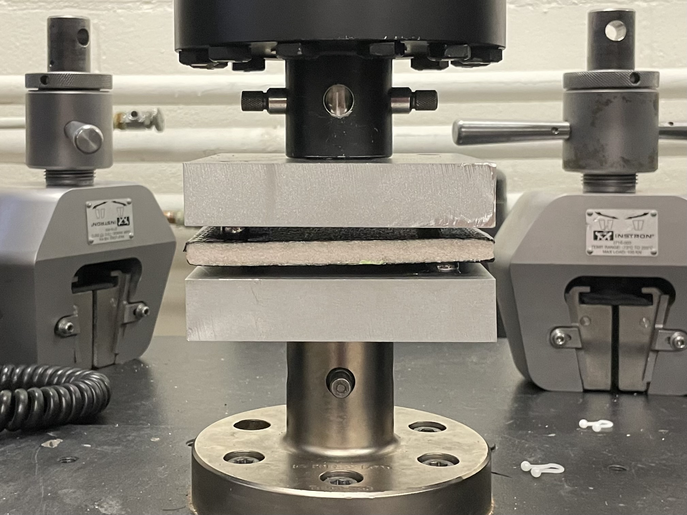
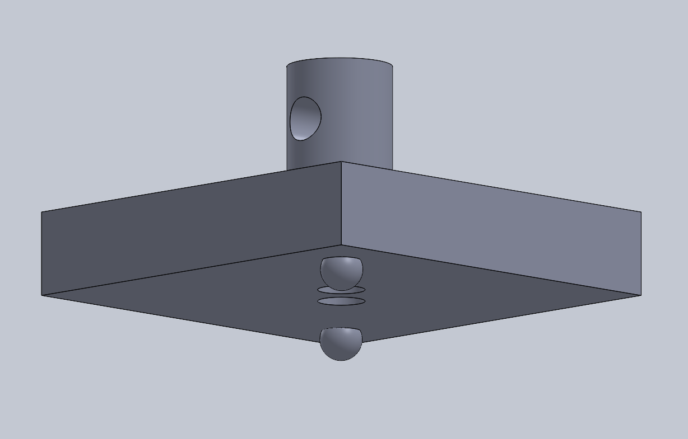

GTXR / Experimental validation
Composite shear testing
Plate-twist testing to measure in-plane shear modulus and verify an ANSYS model of composite sandwich panels.


Test objective
Future fin development required a verified structural model. I designed and executed plate-twist testing to determine the in-plane shear modulus of composite sandwich panels.


Apparatus design
I designed the test apparatus and executed the experiment to characterize the sandwich panels.
The physical test provided the measured material response used to verify the model.
Model validation
The ANSYS model was verified within a 5% acceptance criterion for future fin development.
Publication
Co-author and presenter, AIAA Regional Student Conference Proceedings, 2024.
Shear Modulus Testing in Composite Sandwich Panels
AIAA 2024-85690